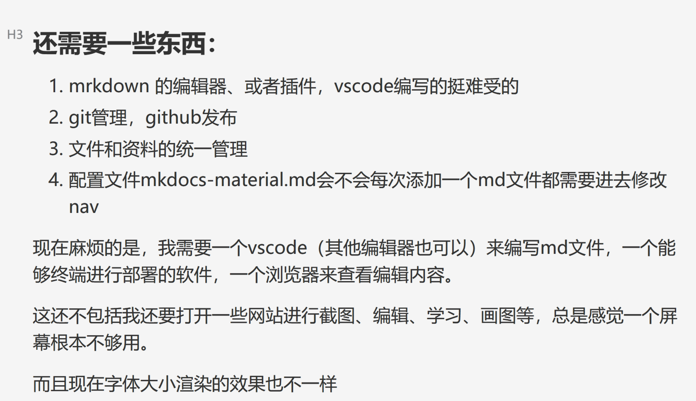

Test
how to use it
we all know that markdown is the best
[!note]
be similar to the jupyternotebook, also need to be installed, served and built.
the shotest steps to build your own doc with mkdocs-materials
- in a folder in which you want to wirte docs /contain the material relevent with this subject
- install with
pip install mkdocs-material - type
mkdocs new . - configure files
e.g. ![[Pasted image 20240530115218.png]]
mkdocs serve- click the link

还需要一些东西：
- mrkdown 的编辑器、或者插件，vscode编写的挺难受的
- git管理，github发布
- 文件和资料的统一管理
- 配置文件mkdocs-material.md会不会每次添加一个md文件都需要进去修改nav
现在麻烦的是，我需要一个vscode（其他编辑器也可以）来编写md文件，一个能够终端进行部署的软件，一个浏览器来查看编辑内容。
这还不包括我还要打开一些网站进行截图、编辑、学习、画图等，总是感觉一个屏幕根本不够用。
而且现在字体大小渲染的效果也不一样
现在这台电脑就是我的小白鼠、试验台，里面充斥着各种细菌和病毒，不够勉强还是能够达到我自己的要求，管TMD，能跑就行了，已经可以开始生产了，就应该在实践中不断地改进自己的工具和方法。
记录
这是第一篇的感想，不知道后面还会变成什么样。不知道是幸运，还是一种相见恨晚，我现在能够使用这个框架，和之前练习打字、拼音、电脑命令行使用、markdown语法都是有很大关系的，所有这些学过的技能最后拼凑出了当下的我，当然还有许多我不知道的方面影响着现在的我，我已经无法察觉到了，或许真的就打开了新的世界吧，“既往不恋，未来不迎，当下不杂”，也许想要做什么还想不清楚，不过却没有停下脚步，到那一天，希望在蓦然回首的时候，我在做自己喜欢做的事情。
闲扯了许多，差点忘记了这是HPC的笔记文档，不过也是自己首次使用mkdocs-material这个框架，所以这篇文章也有了双重的属性。
排版设计
我总是觉得设计也是写作的一部分，设计会引导人们的阅读，要形成自己稳定的风格，变化是要在一定的基础上才行，不以规矩，不成方圆。